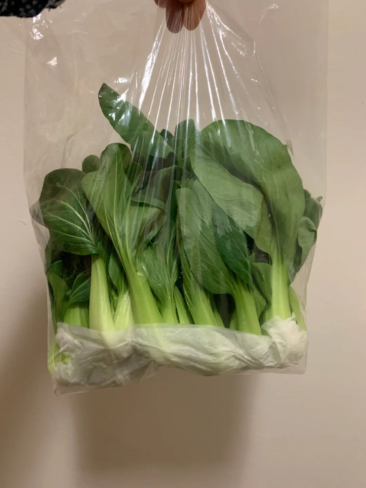
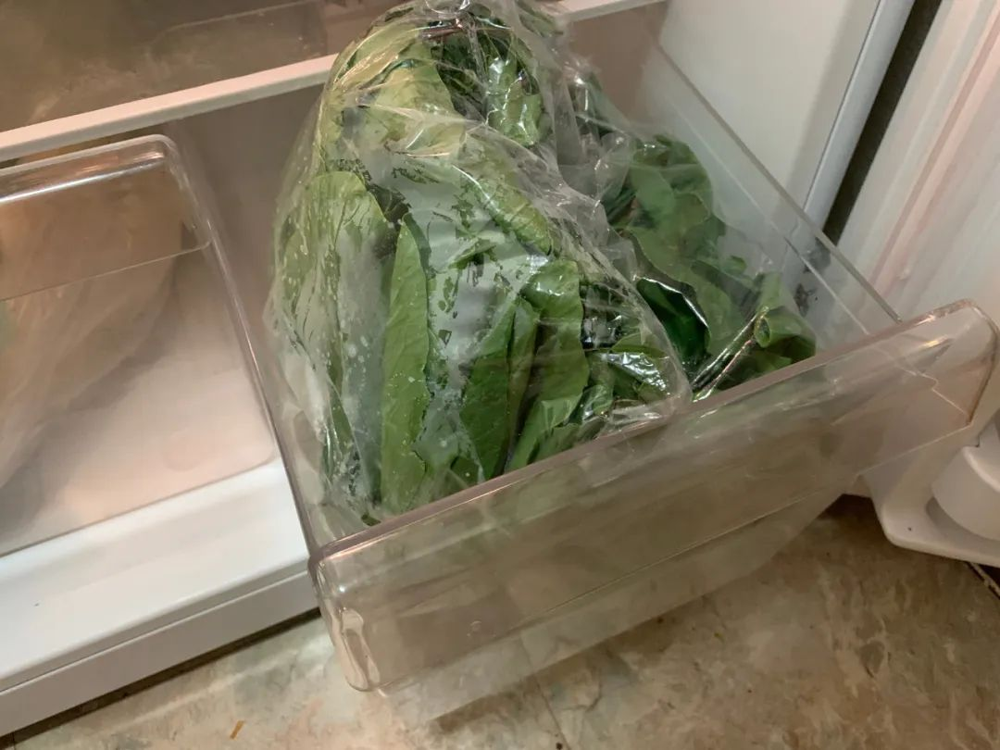
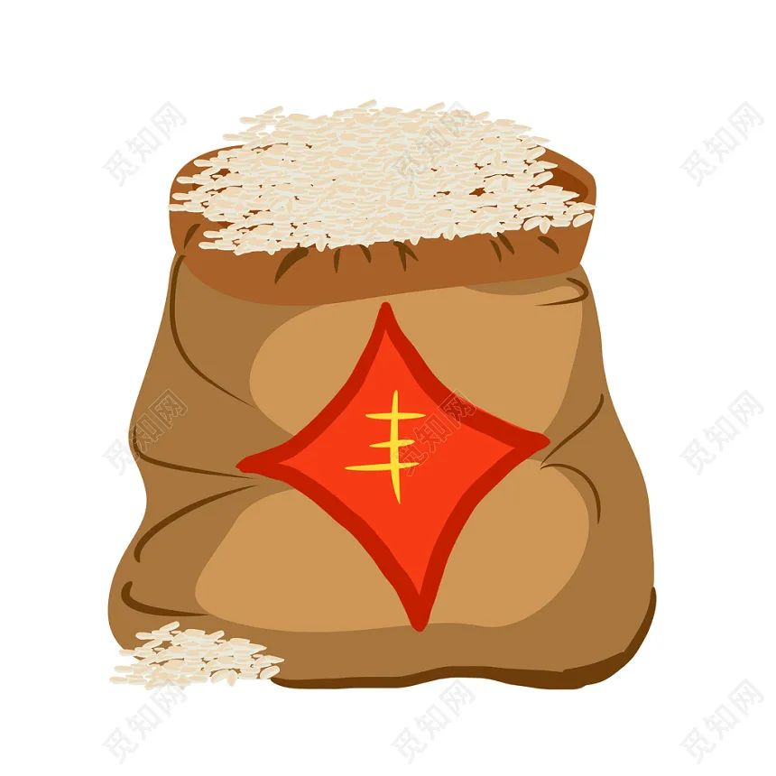
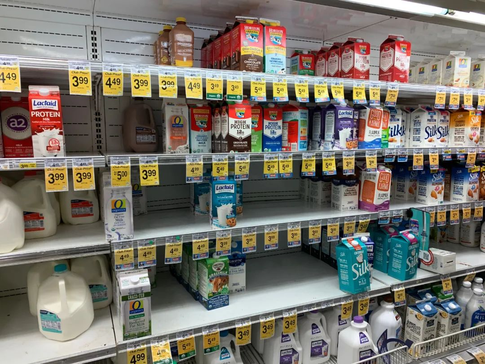
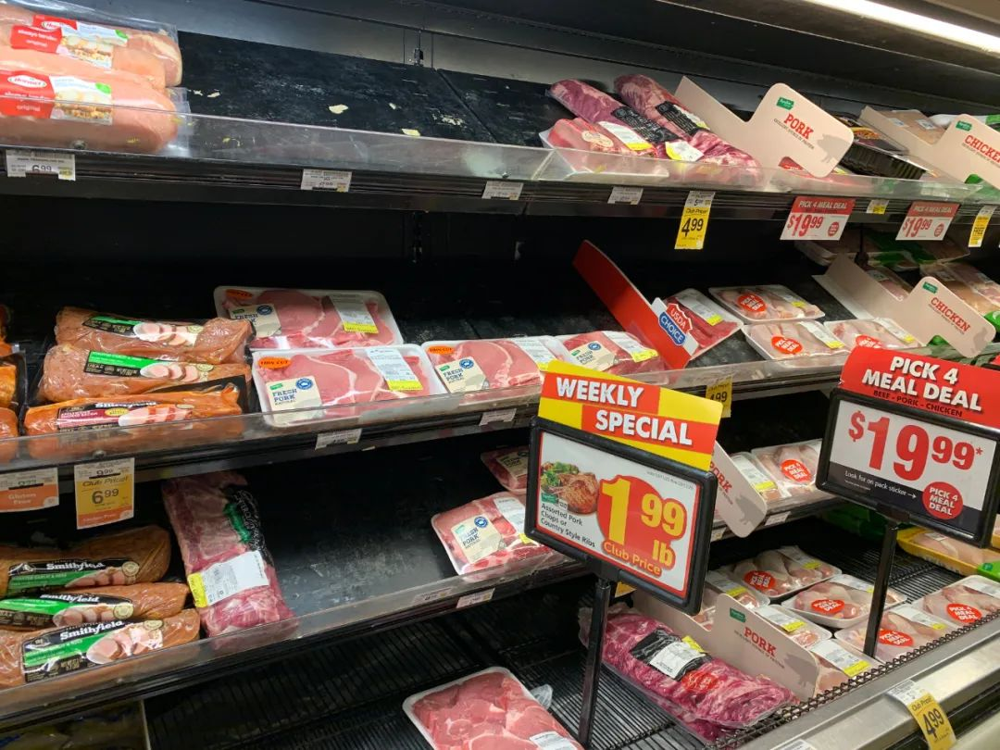
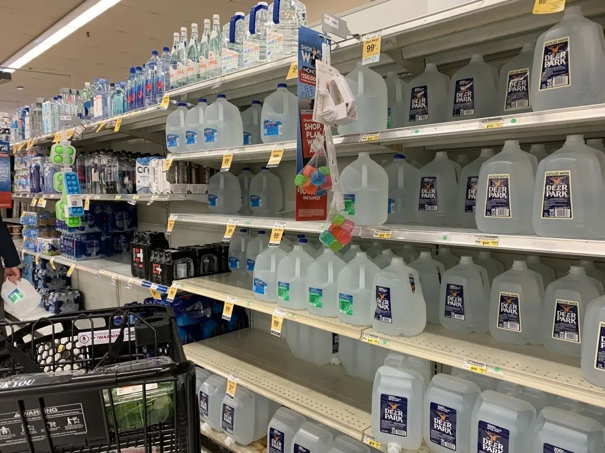
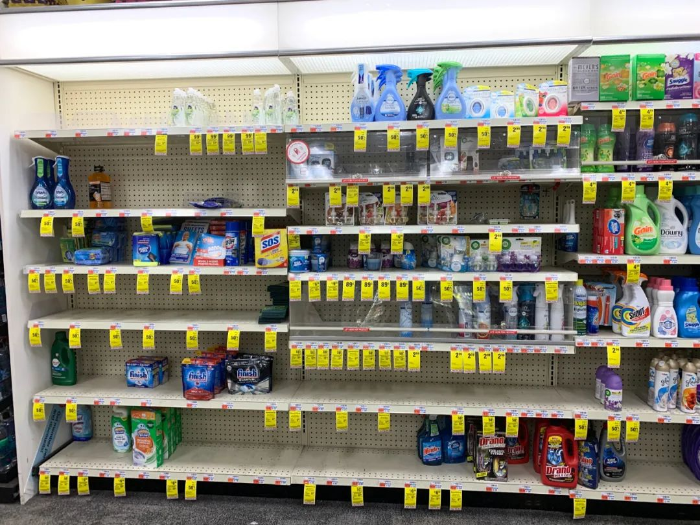
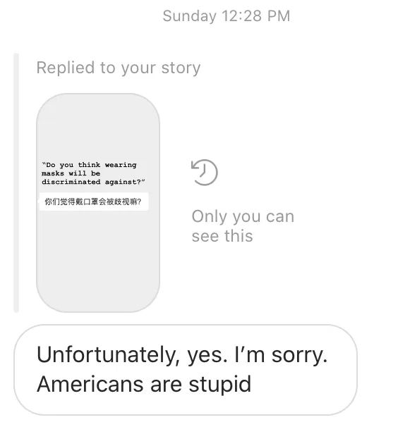

一位“驰援武汉”的货车司机：武汉还是那个武汉，人生中普通的一天又过去了 - 经济观察网 － 专业财经新闻网站
原文链接 备份链接 经济观察网 记者 刘可 连日奔袭一千公里后，宋翔雷终于到了湖北武汉。 开货车十几年了，来武汉这么多次，但这还是宋翔雷第一次能将车开上武汉三环内。车窗外划过的风景依旧是熟悉的林立高楼与城市街景，但太静了，因为带着口罩而略 …

该来的总会来的。学校会停的，考试会续的，网课会搞起的。昨天被amis问买什么比较好囤，承蒙一声康街大厨，就分享一下我的一点小心得吧。（国内的朋友们就没必要参考了，我相信你们已经很熟练了，而且壮哉我大天朝物价&生活便利程度。）
说在最前
在说买什么之前，我觉得首先要了解你自己的储藏环境，比如说冰箱有多大，制冷怎么样，除了冰箱以外你还打算把东西放到哪里，你家是不是还在开暖气？然后再去考虑最优的囤货方案。不然买太多东西不是没地方放就是要坏。
之后要想一下囤多久的货。虽然叫是囤货，但你总归要再去超市的，只不过是减少去人流密集处的频率罢了。就我自己的shopping经验和饮食习惯来看，一次种类齐全的采购大概撑个两周半还是可以的，久了蔬菜真挡不住。而且囤货，尤其是囤食物这件事，边际效益大幅递减。所以，下文的建议也大致基于这个时间跨度，希望大家理性囤货，科学囤货。
食品选择&储藏方式
总的来说，主食和肉类好放，蔬菜不好放。主食生的常温保存就好了，肉类冻起来，蔬菜根茎类好放，绿叶菜有些困难。
蔬菜的选择我觉得有那么几个要点：长时间储藏损耗率低，不易冻伤，不易捂坏。
- 损耗率低：有些蔬菜虽然放久了也能吃，但是口感差很多，或者不能吃的部分变多（比如叶子黄了烂了），那就很亏啊。
- 不易冻伤：我觉得要囤货的话，冰箱温度调低一点比较好，但这也容易让一些脆弱的蔬菜冻伤。
- 不易捂坏：蔬菜要么怕干，要么怕湿。怕湿的就得敞开着放。但在囤货的情况下，敞开放一来不省空间（无法堆叠），二来我觉得冰箱里东西多了再敞开着放不大卫生，三来你都要担心在家会不会长蘑菇了，还买什么蘑菇之类的东西啊。
有人觉得蔬菜要择干净了储存，但我觉得还是不要洗、不要切、不要去藤、不要择菜叶（本来就烂的/坏的还是要择掉）。这样到时候蔫儿了的（你损失的）部分也就只是你本来就不要的部分。
ps.不要买冷冻蔬菜不要买冷冻蔬菜不要买冷冻蔬菜。又不是没有新鲜蔬菜了，这冷冻的既不划算还不好吃，烧出来的菜都是水不拉几的，我觉得没必要。
我觉得好放且便宜的蔬菜有：
- 根茎类：胡萝卜、白萝卜、红薯、芋头
这一类应该是最好囤的品种，冷藏保存可以放好久。红薯常温就行。有人会说土豆，但我是不倾向囤土豆的。要囤的话请弄熟了送进冷冻，不然分分钟绿给你看。
- 瓜茄类：南瓜、番茄、西葫芦
Squash常温保存即可(Safeway最近有4for$5)，番茄冷藏放个两周不是问题。
- 花芽类：西兰花、花菜
依旧建议弄熟了送冷冻，不然冷藏方法有些复杂且占地方。
- 叶菜类：卷心菜、大白菜（结球叶菜都可且强推因为便宜）、洋葱、芹菜
最难保存的一类，如果真要买便宜大碗的中超绿叶菜，保存方式如下：
Step 1: 打湿你的厨房用纸
Step 2: 温柔地包裹蔬菜的根部
Step 3: 装入保鲜袋
Step 4: 垂直装入冰箱保鲜盒
Step 5: 记得时不时查看一下厨房纸有没有干掉，叶子变黄了尽快食用



- 特别单列：记得买葱姜蒜！这个可以放很久但是容易被忽略。相信我，你不会愿意在自闭期间因为家里没有葱姜蒜而特意跑出去一趟的，但有些菜没有小料简直失去灵魂。以及，姜要买干的、完整的。（这条我本来以为是常识，但是自从见到了某位哥直接买了袋非常湿润的、被切割过的姜的时候，我觉得还是得提一句……）
肉类就很简单了，讲道理什么肉都可以囤，但记得只要不是这两天要吃的，一律切好/分好/无脑直接冷冻。
- 万年推荐冻虾，好放好吃你值得拥有。沿海地区群众表示离不开水产（Safeway近期有买一送一，Harris Teeter也经常有冻虾特价）
⚠️但如果是你买的是散称的海鲜拿回来冻（包装不是很密封的那种），记得和别的食物隔开，有些耐冷病菌是冻不死的。
- 调味过的肉也不错。荷美尔有种调过味的tenderloin便宜好吃且方便。但腌肉类记得看保质期。
- 肉丝/肉糜炒熟了再冷藏比生的冷藏要靠谱得多。建议如果不是马上烧的话，得买四周密封看起来比较高级的包装（下图左手边👈），超市自己拿泡沫塑料的那种（右手边👉）分分钟丧失血色。

- 肉类解冻先放至冷藏，再拿出来至室温慢慢化。据说这样比较抗菌。切记不要反复冻。

谷物就不用我说了吧，米面常温保存，面包冷冻大家都会的。

至于速食零食，这不在我的业务范围之内😂（我发现才中超竟然没有东南亚的方便面，也没用好的日本泡面，太不行了）相信各位兄弟姐妹都比我在行👍
说说冰箱
- 温度
刚说了把冰箱温度调低一点的事情，就我公寓这基本款冰箱冷藏冷冻都能毛估估调温，相信大家也都可以的。不用拉满，稍许冷点就行。
- 空间
首先，我觉得没有人家里的冰箱是冷冻>冷藏的，所以还是好好想想如何运用你的冷藏空间吧。
总的来说，冷气下沉，下比上冷，内比外冷。安放排列可以参照企鹅的这个指南👇。（不过里面说的豆制品我劝你们放弃，除非去中超买个什么冻豆腐冻着，不然挺折腾的。以及干货……常温保存就好了啊，不过这儿也买不到什么干货，除非去中超。）

- 保持清洁，确认保存期限
在家闲的时候就去看看你冰箱里的那些个娃吧，确保它们都健健康康的，你才会健健康康的。
说说我们周围的生活
托仙女老乡的福，有了口罩救急可以去采购点东西。我觉得中超的库存还是足的，但是当地超市吧，一眼就能看出美帝人民在囤货的节奏。
蔬菜水果还是很充足的，但肉奶……反正我是没见Safeway有过那么空的货架。


大桶水还挺多，但肉眼可见的小瓶水的消逝。

CVS就不用说了，卫生用品、消毒用品、以及大家关心的卷筒纸都是大家纷纷囤货的对象。（btw我觉得大家应该买点护手霜来着，免洗液消毒液太伤手😂）



虽然我处的社区还算不上panic-buy，但听说一些人口密集的区域确实出现了大面积的缺货，尤其是水、纸。各大超市也纷纷发通知，劝大家理性囤货。

我一直很想知道，像医疗物资、卫生用品、生活必需品这种特殊时期的“刚需”，为什么供应商/govt不会有提前预判呢？没看出治人者智于人啊。不过小伙伴们可以选择围魏救赵，去稍远一些的地方买东西，疫情期间就不要节约打车钱了。
从DMV第一例确诊，到DMV全线失守，到病例持续增长，到cancel in-person classes，到D.C. declares state of emergency，再到public schools全线关闭，更不用说那破天荒的两次熔断，这一周让人感到快得出奇。冷漠的美国多数群众，终于在一个个警报中逐渐觉醒过来。虽然这样说略显粗鲁，但我真觉得这是贵国在魔幻现实中自己作的一手好死。
之前我转发了戴口罩会不会遭歧视的问题，美国朋友说出了大实话：

上周恰巧有机会和美国做public health的人进行了简单的对话，我问为什么你们不戴口罩，对方答道：“第一，我们被告知这个virus没有那么严重。第二，你戴了口罩你依旧可能通过触摸别的东西而被感染。You are protecting others, but you can’t protect yourself. ”我真的一句wtf就在嘴边了。Protect others不好吗请问？不过DC citizens are friendly. 亲测戴着口罩走在路上，只是被路人多看了几眼，保持距离绕个道，我觉得这样倒也挺好。而且我竟然在超市看到了戴口罩的外国人诶，突然觉得，即便he was not white，也算个好迹象吧。
写到这里，突然收到了national emergency的消息。想起刚看到朋友转发的一位game theory老师的话，大意是现在对以自我为中心的欧美人民是最大的挑战，只有选择合作才能得到最大的收益。我住的附近正好有几个hotel，春季的旅游团每天都一波波的真是绝了。据说每年春天来DC看樱花的人都人山人海，宛若顾村公园。有时会想，不是人类的行为决定了什么是自然，而是自然的行为决定了何为人类。唉，大家都是成年人了，要为自己的行为负责了。与此同时，进来网上的消息也是各种魔幻现实，我倒觉得现在不是抛锅论conspiracy的时候，而是看科学家/医学家们的时候，看治理水平的时候，看大家能不能collaborate to pay off的时候。
总之，普通民众就尽人事吧。做好充足的准备，减少in-person的接触和不必要的触碰，勤洗手，时不时地给门把手消个毒，去了密集的地方回来洗个衣服洗个头……（此处省略国内专业指南一万字……）虽然健康的青年人受感染的概率不高，但是凡事都得想想万一，想想一系列接踵而来的麻烦事，想想美帝的医疗开销，想想很有可能被影响来的周围的人……别想了，得不偿失。保护好自己就是在保护别人，保护好别人也就是在保护自己。
疫情是在继续，但会过去的。不管会不会错过今年的樱花，我们会再见面的。最后，引用可爱的Francys的一句话:“Let’s look out for one another.” 祝大家网课愉快。

原文链接 备份链接 经济观察网 记者 刘可 连日奔袭一千公里后，宋翔雷终于到了湖北武汉。 开货车十几年了，来武汉这么多次，但这还是宋翔雷第一次能将车开上武汉三环内。车窗外划过的风景依旧是熟悉的林立高楼与城市街景，但太静了，因为带着口罩而略 …
原文链接 备份链接 体坛周报全媒体驻德国记者 杨子江 在度过了一个令我终身难忘的春节假期之后，2月28日凌晨2点30分，我们全家登上了国航961航班，从北京飞回慕尼黑，从一个疫区飞向了另一个疫区。3月13日晚上21点，儿子和女儿都上床安 …
原文链接 备份链接 体坛周报特约记者吴家驹华盛顿报道 2月3日，在通道找比尔为中国录祝福的自己，完全不会想到：37天后的NBA，会因为疫情而停摆。也想不到自己短暂的生涯，可能会以这种方式结束。 全球第一例感染者至今无从考证，进入2020年 …
原文链接 备份链接 编者荐语： 就像是武汉封城之后，许多网友开始制作自己的视频日记，这让世界了解了武汉的人们的日常与他们面对疫情的许多情绪。四十日谈也正在创建一个平台，用影像使不同国家的人们看到在意大利的人们的状态。秋凉从封城的第0天开始 …
原文链接 备份链接 “Dio ha scelto di stare dalla nostra parte.” ********************** 在2月21日之前，意大利新冠肺炎确诊病例仅有3例。然而截至当地时间3月10日，意大 …